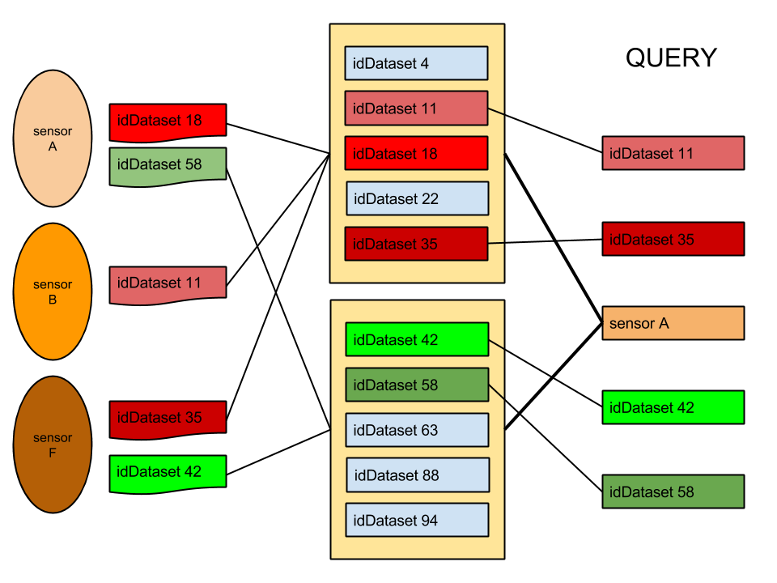
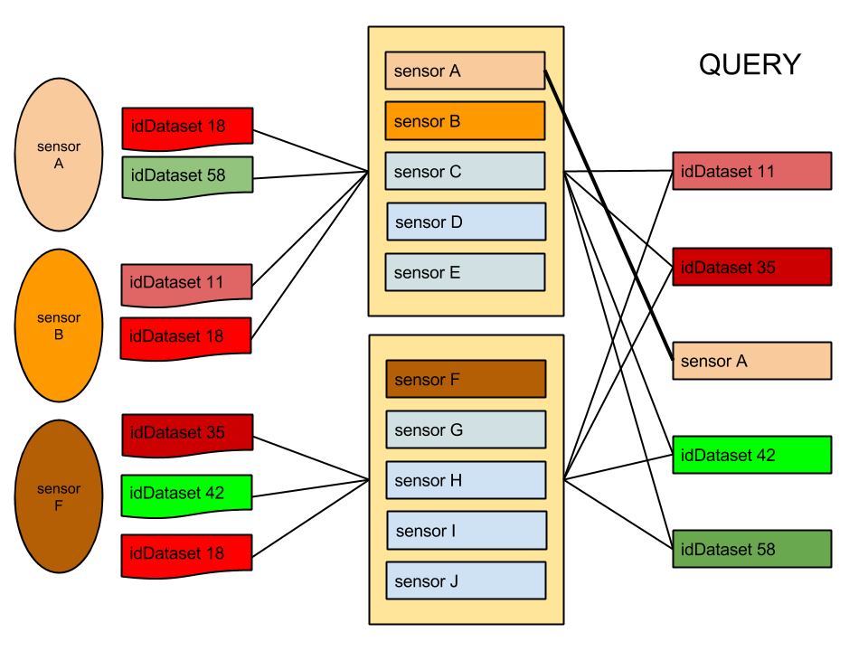
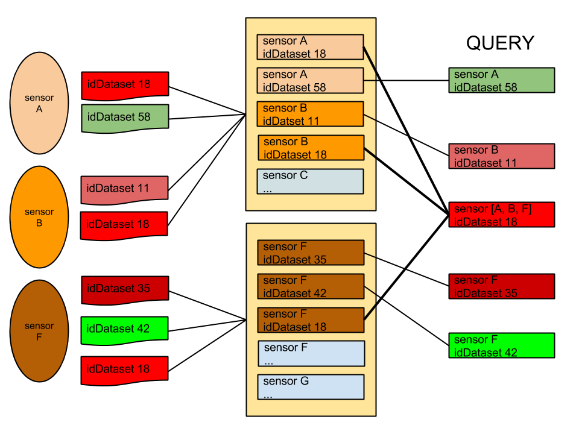

Nel seguente documento si riportano i risultati delle analisi, simulazioni e benchmarking dell’infratruttua mongoDB del SDP per fare una scelta ponderata sulle Shard Key.
Per prendere in considerazione le giuste Shard Key del sistema, in modo da avere una sistuazione ottimale rispetto ai casi d’uso presunti, si sono eseguiti dei benchmark e delle simulazioni sull’ambiente vagrant che rispecchia in toto l’attuale configurazione dell’ambiente dello SmartDataPlatform.
L’incertezza dello scenario di utilizzo rende difficile una sola e definitiva scelta, ma vengono riportate di seguito quattro soluzioni di cui 2 consigliate, con pro e contro di ogni soluzione.
L’analisi viene eseguita sull’attuale collection Measures e l’attuale collection Data.
Per fare in modo che il router mongos divida i chunk di dati in modo efficente tra le varie shard, le 4 Shard Keys possibili sono:
Per quanto riguarda il campo streamCode non possiede abbastanza cardinalità ed unicità per poter essere scelto come Shard Key
Allo stato attuale delle cose, viste le query fornite o comunque utilizzando query basate su idDataset, questa è sicuramente la Shard Key che permette di raggiungere le performance più elevate in lettura.
La chiave è composta con datasetVersion semplicemente per facilitare le query di lettura
Per quanto riguarda la scritturà invece, avere idDataset incrementale potrebbe portare al sovraccarico della shard contenente la maxKey ogniqualvolta viene aggiunto un nuovo stream; Inoltre se il numero di stream non è abbastanza elevato si potrebbero presentare dei jumbo chunks per la bassa cardinalità di idDataset
pros:
- Best Throughput in lettura (query attuali o query basate su idDataset)
- Best Throughput in scrittura se 1 sensore -> 1 stream
cons:

- Worst Throughput in lettura per sensore
- jumbo chunks per indivisibilità dell’insieme
- sovraccarico shard maxKey in aggiunta nuovo stream
Nello schema datasetVersion è ignorato per chiarezza dello stesso.
Le considerazioni sono esattamente le stesse di idDataset + datasetVersion, time serve per aiutare la shard a dividere in più chunk i dati ed avere più granularità, inoltre agevola le query su un range di tempo o che includono time
pros:
- vedi idDataset + datasetVersion
- granularità massima data dalla Shard Key composta con time
- query su campo time agevolate
- maggior randomicità della shard se idDataset random
cons:
- vedi idDataset + datasetVersion
Attualmente questa è la Shard Key peggiore in lettura basandosi sulle query fornite o comunque su query basate su idDataset, in quanto, non si avrà mai idea del chunk in cui si trovano i dati e dovrà essere interrogato tutto il cluster, è invece la Shard Key migliore per le query su sensor.
Per quanto riguarda la scrittura invece, questa sarebbe la shard key ottimale nel caso in cui ci siano molti stream alimentati da molti sensori, evitando il sovraccarico di alcuni chunk (come nel caso in cui si utilizzi idDataset come Shard Key);
d’altra parte, nel caso in cui la differenza della frequenza di invio dei dati tra vari sensori sia molto elevata, si verificherà comunque il sovraccarico.
pros:
- Best Throughput in scrittura se si verifica spesso N sensori - > 1 stream
- Best Throughput in lettura per query basate su sensor
cons:

- Sovraccarico della shard per i sensori con frequenza maggiore
- Worst Throughput in lettura per query attuali (isDataset)
- jumbo chunks per indivisibilità dell’insieme
In lettura le considerazioni sono uguali a quelle di sensor come Shard Key, aggiungendo idDataset si garantiscono prestazioni migliori nel caso in cui alle query fornite si possa aggiungere il sensore; d’altra parte per quanto riguarda gli stream alimentati da più sensori bisognerà in ogni caso accedere a più chunks per leggere tutti i dati.
Avendo più cardinalità e granularità data dalla Shard Key composta la divisione dei chunks è facilitata.
Per quanto riguarda la scrittura le considerazioni sono le stesse dell’utilizzo di sensor come Shard Key.
pros:
- vedi sensor
- Throughput migliorato per query basate su idDataset se sensore nella query
- Maggiore unicità della Shard Key
cons:

- vedi sensor
La scelta della Shard Key ricade su idDataset + datasetVersion + time, in quanto idDataset è utilizzato in tutte le query fornite e fornisce abbastanza cardinalità.
Un effetto collaterale dato dall’ utilizzo di questa chiave, essendo idDataset incrementale, è il sovraccarico della shard dove risiede la maxKey nel momento in cui viene aggiunto un nuovo stream; si può ovviare a questo rendendo randomico idDataset.
Invece, se la cardinalità dei sensori superasse quella di idDataset o comunque fossero parecchi i casi di N sensori -> 1 stream si potrebbe considerare l’utilizzo di sensor + idDataset + datasetVersion come Shard Key, ma solo nel caso in cui sia possibile inserire il sensor all’interno delle varie query.
Shard Key: idDataset + datasetVersion + time inserimento di dati con:
Il benchmark prevede circa 8000 inserimenti alla volta, purtroppo non è possibile fare benchmark sui tempi di lettura/scrittura in quanto l’ambiente di sviluppo darebbe dei dati non validi e verosimili. Sono mostrate le posizioni dei chunk e i chunk impattati in fase di inserimento nei casi in cui idDataset sia random o sequenziale.
Per quanto riguarda la lettura, vista la presenza di idDataset e datasetVersion in ogni query, questa è sicuramente la situzione ottimale, aumenta il throughput nel caso in cui vengano fatte query su time
Per quanto riguarda la collection data visto lo schema e le query identiche alle measures si considera lo stesso discorso fatto per la collection measures.